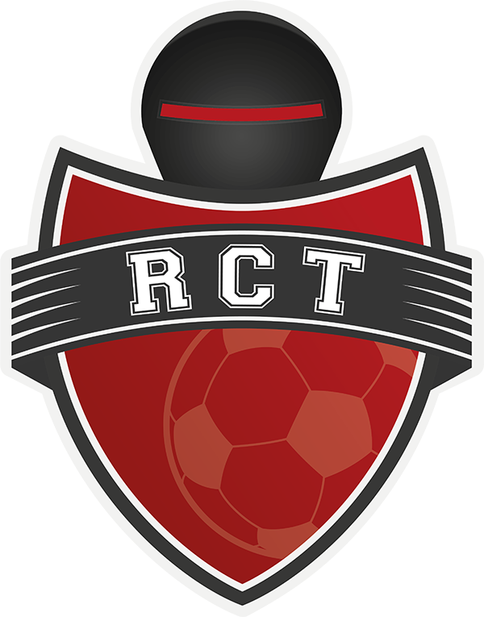

À propos
Étudiant en Génie Électrique et Informatique Industrielle (GEII) à l’IUT de Toulon, je suis passionné par l’électronique, les systèmes embarqués et la robotique.
Électronique • Embarqué • Robotique
Mon objectif : concevoir des systèmes fiables, testables et maintenables (du schéma jusqu’au firmware), avec une approche propre.
- Formation : BUT GEII
- Ville : Toulon, France
- Email : bouzidi.yanispro@gmail.com
- Disponible : Stage / projets
Centres d'Intérêt
J’ai toujours pratiqué une activité sportive assez intense d’une part autour du tennis, du volley-ball, du basket-ball, de la pétanque mais surtout en tant que footballeur. Durant 8 ans j’ai été membre actif du club Solliès-La Farlède dans le cadre de compétitions régionales et j’ai également animé en tant que coach sportif l’équipe de foot du lycée du Coudon dans un cadre bénévole.
Je suis passionné de nouvelles cultures et j’ai voyagé en Angleterre, Espagne, Italie, Tunisie, Turquie et Allemagne. J’apprécie également les bivouacs et les randonnées en milieu sauvage.
Outils Techniques
Un aperçu concret des technologies que je maîtrise.
Langages de programmation
C (Embarqué)
Firmware embarqué : drivers, interruptions, timing
C++
Architecture propre, modules et programmation orientée objet
Python
Scripting, automatisation, analyse et outils techniques
HTML • CSS • JavaScript
Interfaces web, dashboards, expérience utilisateur
Bus, Protocoles & Systèmes
CAN / LIN
Trames, IDs, validation et debug bus
I2C • SPI • UART
Drivers, capteurs, tests, gestion de timing
STM32 (HAL/LL)
Timers, PWM, ADC, DMA, interruptions
ESP32 & IoT
WiFi/BLE, capteurs, web, monitoring
Linux Temps Réel
Xenomai, performances, latence, debug
Logiciels / IDE & Simulation
KiCad
Schémas, routage PCB, BOM
MATLAB
Calcul, scripts, analyse de signaux
Quartus
FPGA : synthèse, compilation, pinout
STM32CubeIDE
Configuration périphériques & build
Git
Versioning, branches, collaboration
VS Code
Développement embarqué & web
Parcours
Résumé
Yanis Bouzidi
Étudiant en BUT GEII.
- Toulon, France
- bouzidi.
Formation
BUT Génie Électrique & Informatique Industrielle (GEII)
2022 - Présent
IUT de Toulon
Électronique, microcontrôleurs, réseaux/bus industriels, automatisme, méthodes de test et maintenance.
Télécharger Relevé BUTBaccalauréat Général
2019 - 2022
Lycée du Coudon, La Garde
Spécialités : Mathématiques et Sciences de l'Ingénieur.
Mention Bien
Télécharger Relevé LycéeExpériences
 Équipe ROBOTCUP — Coupe du Monde de Robotique
2024 - Présent
Compétition Internationale
- Membre actif de l'équipe ROBOTCUP participant à la Coupe du Monde de Robotique (RoboCup).
- Participation à la Coupe de France de Robotique (Eurobot) — voir le projet
- Développement de robots autonomes jouant au football : conception mécanique, électronique embarquée et algorithmes de décision en temps réel.
- Vision par ordinateur, localisation, stratégies de jeu coopératif et communication multi-agents.
- Travail en équipe internationale avec méthodologies agiles et respect des contraintes réglementaires strictes de la compétition.
Stage Technicien Biomédical
2025 (8 semaines)
Clinique Saint Jean, Toulon
- Réalisation d'un scope médical intégrant plusieurs capteurs biomédicaux : capteur de SpO₂, ECG, température et accéléromètre.
- Développement d'un système d'acquisition et d'interprétation des signaux physiologiques, avec affichage des données en temps réel.
- Maintenance et vérification d'appareils médicaux.
Projets Académiques & Techniques
2022 - Présent
- Développement firmware (C/C++), capteurs, communication (CAN/LIN), mise au point.
- Mesures, diagnostic, procédures de validation et documentation.
- Itérations rapides : du prototype au résultat démontrable.
Coupe de France de Robotique 2025
Conception complète d'une flotte de robots autonomes coopératifs.

Autres Projets
Une sélection de mes réalisations techniques.
- Tout
- STM32
- ESP32
- Robotique
- Python
- Automatisme
- Signal

Carte Smartlight
Contrôle automatique et manuel d'éclairage LED (Intensité/RGB) avec télécommande IR.
Moniteur Biomédical Connecté
Développement d'un système d'acquisition ECG & SpO2. Filtrage numérique temps réel et transmission sécurisée vers un dashboard web.
Robot Mobile Autonome
Implémentation d'algorithmes de navigation et d'évitement d'obstacles par fusion de capteurs (US/IR). Asservissement moteur précis.

Centrale Domotique Qualité d'Air
Conception complète : du schéma électronique sous KiCad jusqu'au serveur web embarqué sur ESP32-C6 pour le monitoring environnemental.
Reverse Engineering & Hack RF
Analyse protocolaire et développement d'un driver Python custom pour piloter un générateur RF propriétaire via USB.
Alimentation de Laboratoire
Réalisation d'une alim stabilisée variable. Dimensionnement des composants de puissance, refroidissement et boîtier imprimé 3D.
Télécommande Universelle DSP
Décodage et reproduction de signaux IR (NEC/RC5). Interface utilisateur fluide sur écran OLED avec menu de sélection.
Mise en Service Automatisme
Validation et mise en service d'un système automatisé de gestion de bâtiment (éclairage/ventilation). Tests de conformité et dépannage.
Synthèse Numérique Audio
Synthétiseur audio temps réel sur Raspberry Pi (Xenomai). Implémentation de filtres FIR et modulations FM/AM en C.
Domaines
Ce que j’aime construire / explorer (et améliorer au fil des projets).
Contact
Tu peux me laisser un message ici (ou utiliser l’email ci-dessous).
Localisation
Toulon, France
bouzidi.yanispro@gmail.com